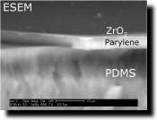
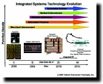
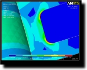
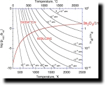
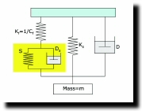
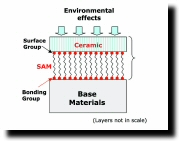

Research
Ceramics are the core material of the AMML’s research. For this, we have built extensive research facilities to handle low-temperature solution processing of ceramic thin films and coatings for a wide range of applications which span from protective layers to functional structures such as dielectric films, semiconducting films and solar cells. Metals are another core material group whose research activity has been more recently grown significantly in AMML. Solder alloys and their developments are the ones we are now focusing on. For this field, we have established industrial partnerships with several microelectronics and materials companies for the developments of “new” Pb-free solder alloys for high temperature electronics including power semiconductor modules and deep downhole drilling electronics. Figure 1 shows our current research activities in AMML including future trajectories.
Due to the presence of the IEEC on BU campus that has well existed over 20 years, we have also been building a research theme in the field of electronics packaging. Our packaging research work has been further broadened since the creation of CAMM on BU campus in 2005, which specializes in roll-to-roll manufacturing for flexible electronics. Since our ceramic processing was based upon low temperatures (< 100˚C), it was a natural match to apply this processing protocol for flexible electronics. These two centers provided us with the motivation to carry more applied and practical research program in AMML. It has not only presented the challenge to work with the industrial partners who need to resolve their failures in a relatively short period of time, but also offered an opportunity to apply our core materials to be considered for such fields. Furthermore, AMML has been offering extensive equipment lines of material characterization, and various companies have been a user for our facilities (see Fig. 2) that include Analog Devices Inc. (ADI), Universal Instruments Corp. (UIC), GE, BAE, ASE, Corning, Endicott Interconnect Technologies (EIT), IBM, and Sematech.
Recent effort is also directed at developing enabling materials for renewable and alternative energy fields. Both ceramic and metallic materials and their microstructures developed in AMML are being considered for these applications. The high-melting point (HMP) solder alloys we are developing, for example, can be used for joining materials for power electronics, electric vehicle (EV) electronic control modules, and windmill frequency inverters. Another effort is given to nanostructured ceramics and hybrid materials by employing in-situ precipitated nanoparticles and nanostructures grown from aqueous solution. Our group has been investigating key mechanisms in film formation and microstructure developments of these ceramic materials formed in precursor solution, which not only enables their integration into a product level but also can make possible more reliable film products. Especially, a low temperature processing has shown versatility to generate various nanostructures (in 0-D, 1-D, 2-D) with high crystallinity. Such highly crystalline nanostructures can provide intriguing photovoltaic/photocatalytic reactions upon light absorption and energy harvesting capacity through mechanical stresses. One challenge in those applications is to form ceramic films that can be strongly adhered to the base structure and be sufficiently strain-tolerant upon mechanical and thermal stresses.
One strategy for generating the strain-tolerant film structure is to have nanostructured ceramics filled with polymer forming the hybrid structure. The added polymer will help the organization of nanostructured ceramic film while exhibiting superior toughness, as demonstrated in formation of biominerals in nature. In this hybrid film, the nanostructured ceramics enable the required functional properties while resultant hybrid structure will exhibit a ‘synergistic’ effect by self-compensating for the weaknesses of ceramic (brittleness and low adhesion) and polymer (low mechanical strength and easy surface degradation).
Past Research
A Novel Coating Concept for Electronic and MEMS Packaging(co-funded by Semiconductor Research Corporation & Microelectronics Design Center) |
 |
Ceramic Thin Film Embedded Capacitors for Emerging System-in-Packaging (SIP) Concepts(funded by New York State Office of Science, Technology and Academic Research) |
 |
Electronic Packaging Materials for Deep Drilling Technologies(funded by General Electric / Department of Energy) |
 |
Design, Packaging and Reliability of MEMS S&A Components - Materials Characterization(funded by Office of Naval Research) |
 |
Utilization of Dynamic Nanoindentation for Soft Materials(funded by Integrated Electronics Engineering Center) |
 |
Oxygen and Moisture Barrier Coatings for Organic Electronics(funded by Center for Advanced Microelectronics Manufacturing / US Army) |
 |